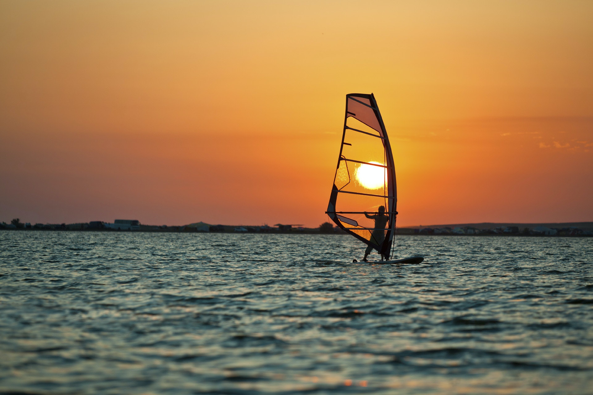
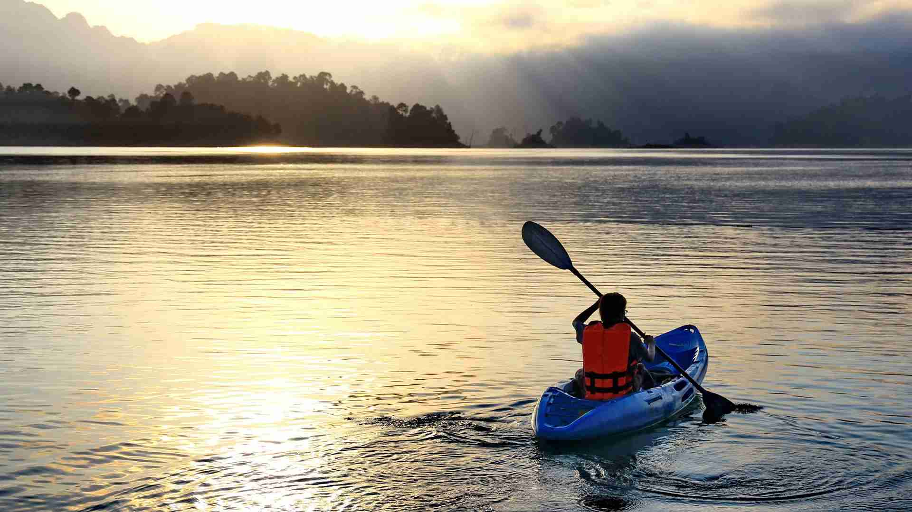
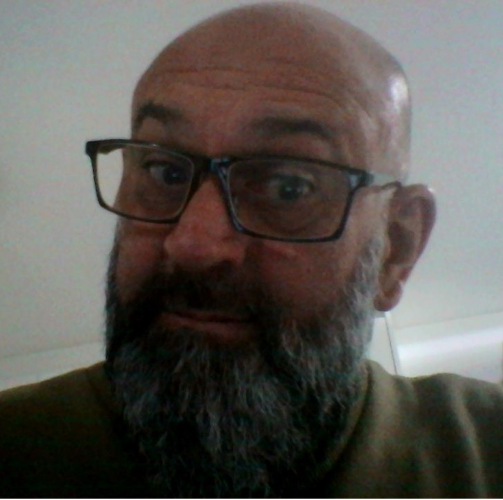

O Montanhismo, minha paixão inicial , foi amor a primeira vista, apesar de não praticar atualmente, as lembranças são muito vívidas.
Conheci todo o CONJUNTO MARUMBY, foram dezenas de viagens de trem...
Participei da corrida chamada de MARUMBY TROPHY, dois dias de aventuras pelos morros do conjunto, o vídeo abaixo é do Globo Esporte e a matéria é sobre essa prova
WIND SURF
O WINDSURF me conquistou no final da década de 1980, também, posso dizer, foi amor ao primeiro vento, uma sensação de liberdade que nunca tinha sentido....
CANOAGEM
Na mesma época que conheci O WINDSURF, acabei por me interessar pela CANOAGEM. Tive a oportunidade de me exercitar e apreciar a natureza, conheci muitos lugares praticando esses dois esportes, momentos inesqecíveis...
CRÉDITOS
Atividade realizada na disciplina de PENSAMENTO COMPUTACIONAL, do Colégio Estadual Costa Viana, turno da manhã. O colégio está localizado em São José dos Pinhais/PR.